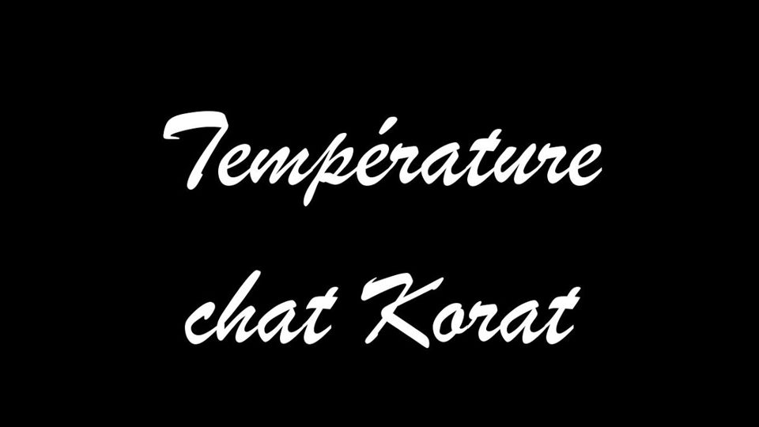

Que faire si votre Korat n'est pas bien ?
Ingestion toxique
Votre Korat vient d'ingérer quelque chose de toxique comme 50 grammes d'oignon dans la sauce du plat qu'il a terminé, un chocolat au lait qu'il a lapé, une plante toxique qu'il a grignoté, etc.
Bien entendu, il faut d'urgence se rendre chez le vétérinaire le plus proche. Si cela n'est pas immédiatement possible, voici deux conseils :
Faite vomir votre Korat si l'ingestion est récente de moins d'une heure. N'essayez pas de lui mettre vos doigts dans la bouche, ça ne fonctionne pas et il vous mordra ! Faites lui avaler un peu d'eau oxygénée.
Si la consommation remonte à plus d'une heure, vous pouvez lui donner de l'huile de paraffine pour accélérer le transit dans le tube digestif afin de limiter l'absorption des principes toxiques. Vous pouvez aussi lui donner du charbon actif en quantité pour se servir de son pouvoir adsorbant le principe toxique de la plante et diminuant ainsi son passage dans l'organisme.
Centre anti-poison
En cas de doute, contactez le centre anti-poison vétérinaire dans un premier temps (situé à Nantes 02 40 68 77 40 qui fonctionne 24h/24 site web ici). Pour une hospitalisation, l'endroit le plus équipé en France semble être situé à Maisons-Alfort en Île-de-France (site web ici) ; plusieurs retours négatifs au Korat Club de France nous amène néanmoins ne pas forcément conseiller que ce dernier en cas d'urgence (plusieurs personnes ont attendu plusieurs heures sur place avant que l'on s'occupe de leur chat !).
Vous vivez tous les jours avec votre Korat et vous connaissez bien son comportement normal. Tout changement, même léger, peut être un signe. D'où l'intérêt de bien observer votre Korat lorsqu'il est en pleine forme.
Inquiétez-vous si votre Korat semble prostré sans bouger, s'il se cache et évite le contact, s'il ne se nettoie plus, si son appétit a fortement diminué, si sa prise de boisson est modifiée (en excès comme en défaut), s'il a subitement maigri (facile avec un Korat qui n'a pas de poils longs masquant cela).
La truffe chaude, signe de fièvre ? Une idée reçue
Toucher la truffe d'un chat, ou même le pavillon de ses oreilles, ne permet pas de déterminer s'il fait de la fièvre. De même qu'un petit nez humide n'est pas signe de santé.
Un chat fiévreux et aux prises avec une rhinotrachéite peut très bien avoir des épisodes de fièvre ainsi qu'un nez humide qui « coule ». Votre perception de la chaleur du museau sera influencée par la température ambiante et non par des variations dans la thermorégulation de l'animal. Un chat couché au soleil peut très bien avoir le bout du nez chaud sans qu'il soit souffrant. À l'inverse, un minet malade souffrant d'hypothermie aura sans doute les extrémités un peu plus froides. Pour déterminer si un chat fait de la fièvre, seul le thermomètre rectal est efficace, la température normale se situant entre 38°C et 39°C.
Le film d'un éleveur de Korat sur la prise de température :

Température Korat